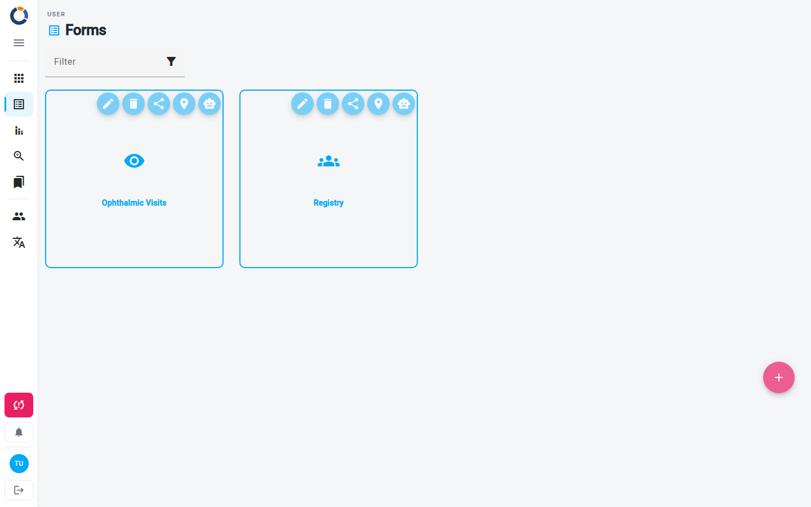
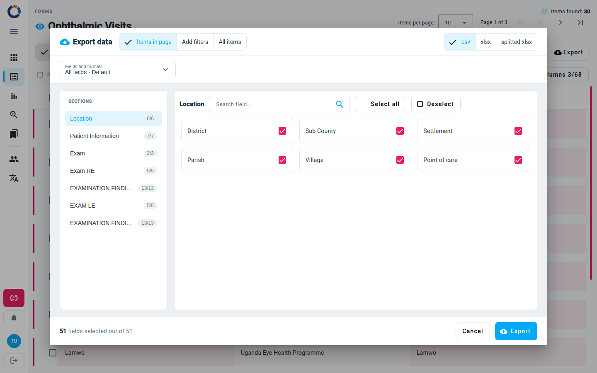

Forms
The Forms page is your starting point for structured data collection in Dino. From here you can browse, create, and manage form schemas, then view and work with the submissions gathered through each form.

The main view displays a grid of form schema tiles. Each tile shows the form's label and icon. A tile marked with a fingerprint icon is unique: only one submission with that exact set of metrics can exist. Hovering over a tile reveals action buttons:
- Edit Form Schema – Modify the form's structure (fields, validation, metrics).
- Delete Form Schema – Remove the schema. Dino refuses if the schema still has submissions or a report uses it, and asks for confirmation if other forms or user groups refer to it.
- Share Public Url – Get a public link that allows external submissions.
- View Map – Open the map view for submissions with location data.
- Chat with your data – Ask questions about your submissions in natural language using DataChat.
Tip
The actions available on a tile depend on your permissions. You may not see all buttons.
If no form schemas exist yet, the page shows a message inviting you to add one. When the instance enables it, a Filter field above the tiles narrows them by name.
Creating a Form Schema
- Click the + floating button at the bottom right of the page.
- Design your form on the Edit Form Schema page.
Working with Submissions
Click a form schema tile to open its submission list. This table shows every submission collected for that schema.

Above the table you can see how many items were found, and you can move between pages. The toolbar offers:
- Add New form – Create a new submission.
- Import forms – Bring in submissions from a file. See Import Data.
- Filters – Narrow the list by date range, status, user, metrics, and more. Switch between Simple and Advanced filters, or save a filter preset to reuse later.
- Export – Download submissions in a file. See Export.
On the left of the toolbar, the Data / Map / AI switcher changes view; see Additional Views.
A row whose data may be incomplete shows a warning icon. Rows with files waiting to be synced show a cloud upload icon.
Export
Use the Export button in the toolbar to download submissions.

The Export data dialog lets you choose:
1) Which forms to export. 1) Items in page. Only the forms shown on the current page of the list (the default). 2) With active filters (N). All the forms that match the filters you have applied. When no filter is active this option reads Add filters: it closes the dialog so you can set some. 3) All items. All forms, without filtering or pagination. On a large form this may slow the device down. 2) The format. 1) csv. Each exported form is a row, and each field a column. 2) xlsx. The same, in Excel format. 3) splitted xlsx. Excel format, with one sheet per slide. 3) In the Fields and formats menu: 1) Select all Form fields. Exports every field of the form. 2) Label values. For fields with predefined values (single or multiple choice), exports the displayed label instead of the internal code. 3) Value format, one of: - Default. - Data Analysis format. Repeating slides and multiple choice fields are exported on several rows, one repetition and one choice per row; the other fields are repeated on each row. An extra column, conta, is 1 on the first row of each form and 0 on the additional rows generated for the same form, so summing conta counts the forms. - Separate columns. Each option of a multiple choice field gets its own column, with 1 or 0. 4) The fields to export. The Sections list on the left shows each section with its selected and total fields. For the active section you can search a field, use Select all / Deselect, or tick single fields. The footer shows how many fields are selected; click Export to download.
Some columns are always exported and cannot be unselected:
- Form ID
- Creation date
- Update date
- DINO user data (ID and full name)
- Metrics data (id, name, etc...)
- Form status (id, name, label, level, color), when the form has statuses
- Dinoinvalid
Row Actions
Hover over a row to show the View and Edit icons. Click a row to select it: the action bar above the table then shows every action you can use on it (view, edit, delete, print as PDF, download as DOCX, print badge). The available actions depend on your permissions and the form's configuration.
Creating a New Submission
- Open the submission list for the form schema you want.
- Click Add New form in the toolbar.
- Fill in the blank form and save it. See Edit Form.

The new submission appears in the list.
Bulk Operations
Select one or more submissions using the checkboxes to reveal bulk actions. You can delete the selected submissions or edit them together, applying the same field value to all of them.
Warning
Deleting a form schema or its submissions cannot be undone. Take care when using delete actions.
Additional Views
Switch view with the Data / Map / AI buttons on the left of the submission list toolbar, or from the buttons on a form schema tile. The filters you have applied are kept.
- Map – View submissions with geographic coordinates on an interactive map. It is available only when the schema collects locations. Learn more in Forms Map.
- DataChat (the AI view) – Query your form data using natural language. See DataChat for details.
Warning
DataChat may consume credits. Check your account's credit balance before using it.